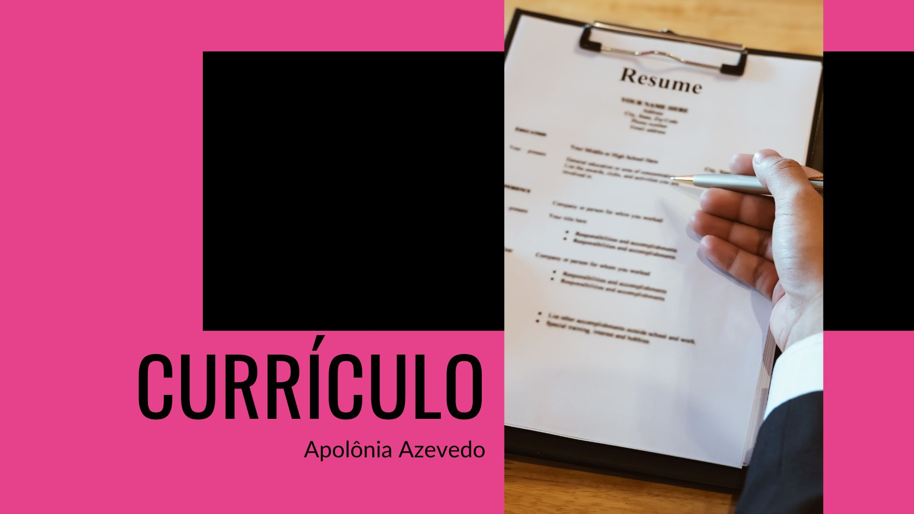
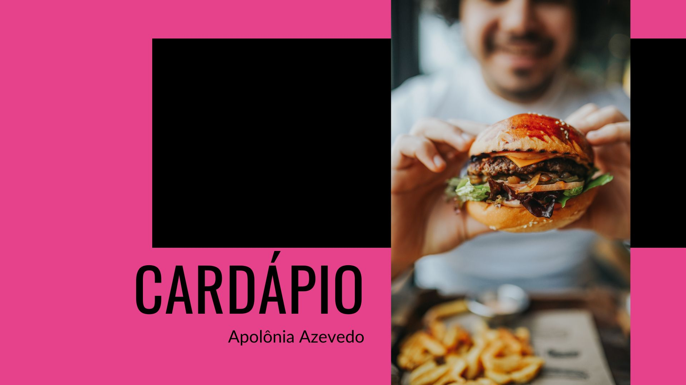
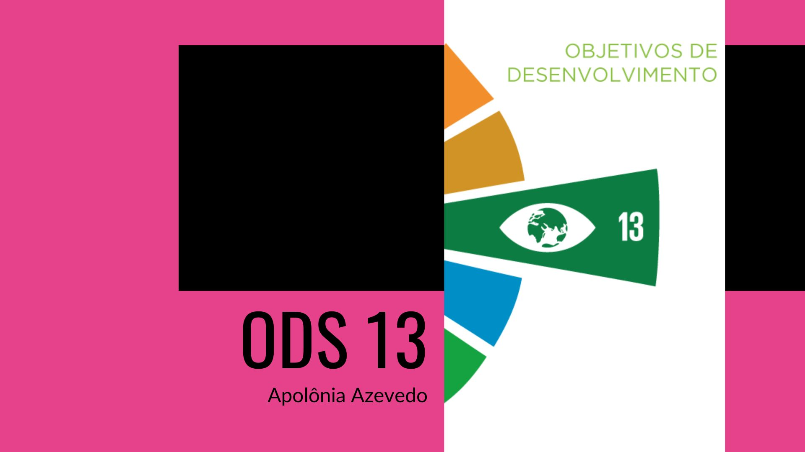
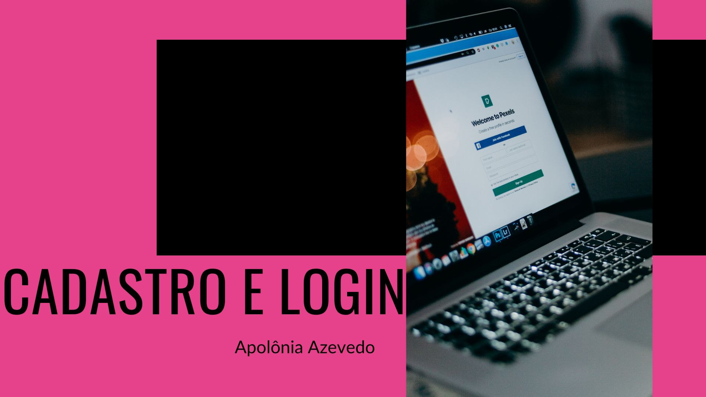

Meus Projetos




Olá, meu nome é Apolônia. Tenho 23 anos e minha paixão e foco estão direcionados para o universo do desenvolvimento web.
Trago comigo uma formação em Gestão da Tecnologia da Informação, concluída na FATEC Itaquaquecetuba, no mês de junho do ano de 2023.
Os primeiros passos em minha carreira na área de tecnologia foram traçados durante um estágio em Processamento de Dados e Processos. Durante esse período, tive a oportunidade de absorver conhecimentos e experiências que contribuíram para o meu crescimento.
Um capítulo especial em minha trajetória também inclui uma passagem como instrutora de Informática Básica. Essa experiência me permitiu não apenas aprimorar minhas habilidades técnicas, mas também proporcionou a satisfação única de compartilhar conhecimento e ajudar outras pessoas a desvendar o mundo digital.
A sensação de contribuir para o aprendizado e o crescimento das pessoas ao meu redor foi muito gratificante.
Minha motivação é ir para a área de desenvolvimento front-end. Desejo me dedicar a criar interfaces cativantes e funcionais que permitam aos usuários interagir com a tecnologia de maneira amigável e intuitiva. Acredito que a tecnologia é um campo em constante evolução, e essa dinâmica é o que mais me atrai.
Cada nova inovação e cada desafio são oportunidades para aprender, crescer e contribuir para esse emocionante mundo da tecnologia.